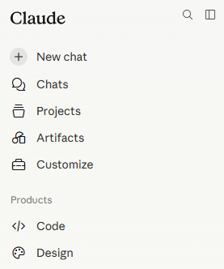
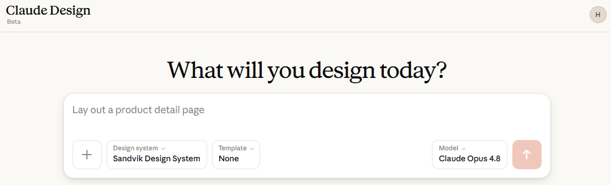
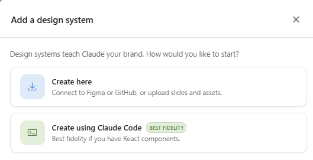
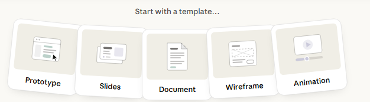
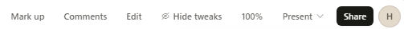
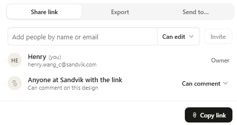
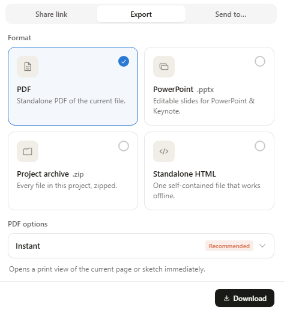
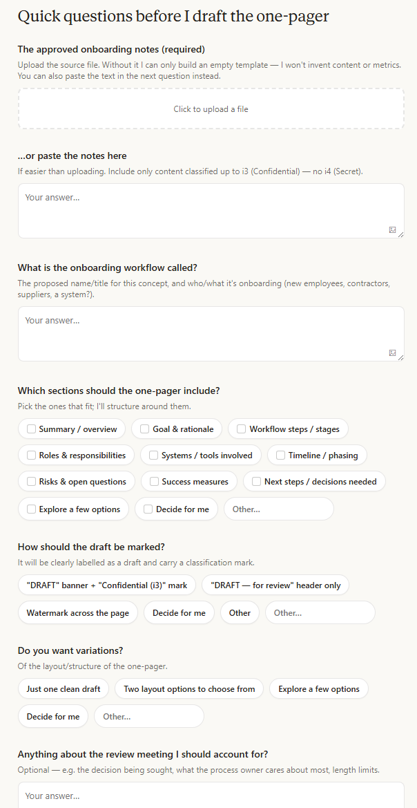
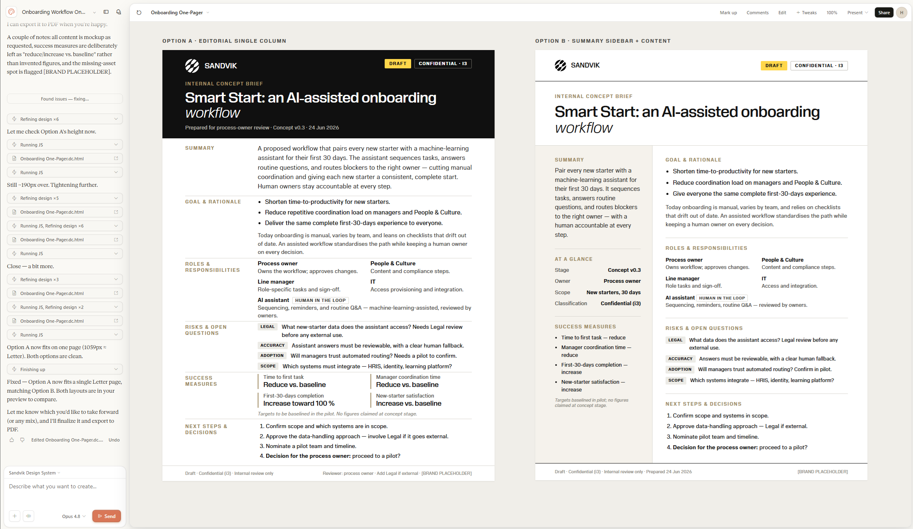

Claude Design
Claude Design is the visual Claude experience for exploring, drafting and refining design directions, prototypes, slides, one-pagers, layouts and graphics through chat, ready for human review. This module shows you when it is the right product, how its capabilities work, and the judgement that turns a polished generated draft into something Sandvik can rely on.
Claude can accelerate your work, but you remain responsible for what you enter, approve, share and publish. Follow Sandvik policy, protect sensitive information, and review outputs before relying on them.
This is a standalone, practical tool module focused on one tool. Several tool modules sit alongside it, and in the near future they will be organised into broader learning journeys.
Using Claude Design day to day for reviewable visual work: choosing the fit, preparing approved sources and assets, writing a visual brief, exploring directions, refining with the product capabilities, reviewing carefully, and exporting, sharing or handing off only through approved Sandvik routes.
Claude Design is for visual work that is meant to be reviewed. Choosing the right product is the first decision: a polished generated design is still a draft until the right owner approves it.
Claude Design is a research preview. At Sandvik you apply for it through the Service Portal order form →, the same place you order the other Claude tools, and your request is reviewed and approved before the license is provisioned, starting with a default limit of $25 per user per month. Treat its outputs as drafts, and confirm the approved inputs and export routes before you rely on or publish anything from it.
Claude Design opens from the Claude sidebar and runs in your browser. Once you have it, starting a design takes three steps: open it, optionally set a design system and template, then describe what you want and refine.
In the Claude sidebar, open Design under Products, alongside Code, to start a new design.
Both are optional. When an approved design system is available, selecting it keeps work on brand, and a template gives consistent structure; the Template selector defaults to None.
Write a short brief in the prompt box, generate, then refine with mark up before any review.

Claude Design sits under Products in the Claude sidebar, alongside Code. Open it from there to start a new design, or switch back to Chat or Code without leaving your account.
At Sandvik it is one of the selectable tools under the Claude Enterprise license, available where an administrator has enabled it.

The start screen
The Design system selector sets the brand Claude follows, and the Template selector sets the starting structure. Choose both before you describe the design.
Prompt box and model
The prompt box is where you describe what to create. The model picker next to it sets which Claude model generates the design.
Claude Design is built for exploring before committing. Rather than producing one finished design, it helps you try a few directions, choose one, and refine it into a reviewable draft.
The whole flow runs in chat, so you stay in control at every step and nothing is final until the right owner reviews it.
The core loop
Each design moves through the same seven steps. Most of the work is in the middle: exploring directions and refining the one you choose.
Explore, then choose
Ask for a few distinct directions up front. Comparing them is faster than perfecting the first idea, and it usually leads to a better result.
Design systems
A design system teaches Claude your visual language, so generated work follows approved brand instead of an invented one. For Sandvik work, the Sandvik Design System is your default: select it for every new design so the output follows Sandvik's branding from the start.

Templates
A template gives a new design a consistent starting structure and format. Claude Design shows a template selector that defaults to "None". Starting from an approved template keeps layouts predictable and reduces rework.

Editing the output
Each design Claude generates is a project. The first version is never the finished product. It is a starting point you adjust, and one you can share with other people. Use the toolbar to refine it: point at an element to mark up a change, leave comments, edit directly, toggle tweaks, or present it.
Editing makes refinement precise, but it does not approve anything. A project is still a draft until the right owner signs off.

Sharing
A project can be shared with other people once it is ready. Sharing is fast, so review the project first, then share through an approved route. The Share button opens three ways to share.


What's allowed, what needs care, and where final policy is still being confirmed. Where you see a placeholder, the local rule has not been finalised. Claude Design is a research preview that you apply for through the Sandvik service portal; confirm your access, settings, and the approved inputs and export routes before relying on it.
Visual exploration can involve many iterations, generated variants, large files, exports and repeated refinement. At Sandvik, Claude Design usage is direct and consumption-based: there are no five-hour session or weekly limits, but every action consumes tokens billed pay as you go to your cost center, so costs can rise quickly.
Iterating many variants with large files and repeated exports can use capacity quickly. Keep an eye on your usage and keep work scoped.
Most problems fall into five groups. Each card shows the risk; tap it to flip to the habit that avoids it.
Draft an internal one-pager
Apply the workflow to a realistic Sandvik task, using the capabilities, then run the review checklist before anything is shared.
Only the approved notes for a proposed onboarding workflow, classified up to i3 (Confidential). Do not use i4 (Secret) information.
A one-page internal concept sheet a process owner can review before a meeting.


Check what you've learned
A short set of practical decisions about choosing the fit, design systems, templates, mark up, preparing sources, and sharing safely. Pick an answer, check it, and read the feedback before moving on.
{{ qPrompt }}
Recap
Choose Design for the right kind of work, prepare approved sources and assets, write a clear brief, explore a few directions, and refine with the capabilities: an approved design system and template keep work on brand, and you refine each project with mark up before review. Designs are shareable, so review carefully before sharing or handing off through approved Sandvik routes.